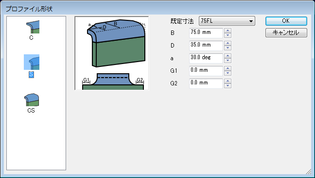
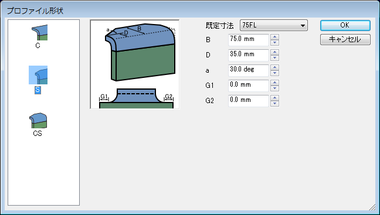

フランジ
フランジ
部材のフランジ部分を作成します。

操作方法
パラメータを入力すると作成形状がプレビュー表示されます。形状の確認後、OKボタンで実行します。
パラメータ
- 形状
フランジの形状、寸法を選択、設定します。(ダイアログの入力方法)
寸法や形状のタイプを設定します。(ダイアログの入力方法)
「アングル方向反転」をチェックすることでフランジの方向を反対側にすることができます。
「取付角度」は既定の角度(90°)からの角度を指定します。
 

- 基準面
フランジの基準となる面を選択します。

- 取付面
フランジを取り付ける面を選択します。